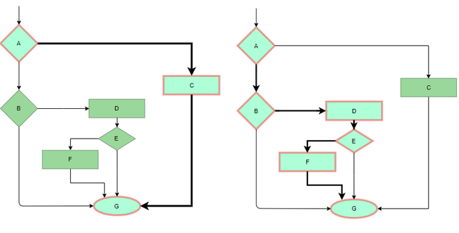

7.15 White Box (Structural) Testing
White box testing (also called glass box, clear box, or structural testing) examines the internal structure, logic, and code paths of a program. It complements black box testing (§7.16–7.17) and supports verification activities in §8.3 V&V.
Definition
- White box testing evaluates software by inspecting and exercising its internal structure, source code, and control flow.
- Test cases are derived from knowledge of the program's logic — conditions, loops, branches, and data paths — not from external specifications alone.
- Alternative names: glass box, clear box, and structural testing.
- White box testing can be applied at unit, integration, and system levels whenever internal code access is available.
- It is primarily performed by developers who understand the codebase.

White box testing techniques
- Statement coverage: Design test cases so that every executable statement in the program is executed at least once.
- Branch coverage (decision coverage): Ensure every branch (true and false outcomes) of each decision point is taken at least once.
- Path coverage: Execute every possible independent path through the control flow graph — the strongest but most expensive criterion.
- Condition coverage: Test each boolean sub-condition within a compound decision for both true and false outcomes independently.
- Basis path testing: Use the Control Flow Graph (CFG) and cyclomatic complexity to derive a minimum set of linearly independent paths — see §6.6 Cyclomatic Complexity.
Coverage hierarchy
- Path coverage ⊃ branch coverage ⊃ statement coverage — satisfying a stronger criterion automatically satisfies weaker ones.
- 100% statement coverage does not guarantee 100% branch coverage — a decision's false branch may remain untested.
- Cyclomatic complexity V(G) gives the minimum number of independent paths needed for basis path testing: V(G) = E − N + 2P (edges − nodes + 2 × connected components).
Control flow testing and data flow testing
- Control flow testing focuses on the sequence of execution — ensuring all branches, loops, and paths in the CFG are exercised by test cases.
- Data flow testing tracks the definition and use of variables through the program — detecting anomalies such as using a variable before it is defined or after it is killed.
- Data flow testing complements control flow testing by catching defects related to variable lifecycle (define-use pairs) that branch coverage alone may miss.
White box testing workflow
- Code understanding: Read and analyse the source code, identifying modules, functions, and their responsibilities.
- Path identification (CFG): Construct the Control Flow Graph showing nodes (statements/blocks) and edges (transfers of control).
- Test case design: Derive test inputs from coverage criteria (statement, branch, path, basis path) to exercise identified paths.
- Execution and coverage measurement: Run test cases and measure which statements, branches, and paths were actually executed.
- Reporting: Document coverage results, untested paths, and defects found; iterate until coverage targets are met.
white_box_coverage.pseudo
// Example function under test
FUNCTION classify_grade(score):
IF score >= 90 THEN
RETURN "A"
ELSE IF score >= 75 THEN
RETURN "B"
ELSE IF score >= 60 THEN
RETURN "C"
ELSE
RETURN "F"
END IF
END FUNCTION
// ── Statement coverage test cases ──
// Need at least one test per RETURN statement (4 statements)
test_statement_coverage():
ASSERT classify_grade(95) == "A" // executes RETURN "A"
ASSERT classify_grade(80) == "B" // executes RETURN "B"
ASSERT classify_grade(65) == "C" // executes RETURN "C"
ASSERT classify_grade(40) == "F" // executes RETURN "F"
// ── Branch coverage test cases ──
// Need true AND false for each decision (3 decisions × 2 = 6 branches)
test_branch_coverage():
ASSERT classify_grade(95) == "A" // score >= 90 : TRUE
ASSERT classify_grade(85) == "B" // score >= 90 : FALSE, score >= 75 : TRUE
ASSERT classify_grade(70) == "C" // score >= 75 : FALSE, score >= 60 : TRUE
ASSERT classify_grade(40) == "F" // score >= 60 : FALSE
// Boundary values also test decision edges:
ASSERT classify_grade(90) == "A" // boundary: score >= 90 TRUE at exactly 90
ASSERT classify_grade(89) == "B" // boundary: score >= 90 FALSE at 89
// ── Coverage measurement ──
PROCEDURE measure_coverage(test_suite, source_code):
cfg = build_control_flow_graph(source_code)
results = execute(test_suite)
statement_pct = count_executed_statements(results) / total_statements(cfg)
branch_pct = count_executed_branches(results) / total_branches(cfg)
REPORT statement_pct, branch_pct
END PROCEDUREExam question — White Box Testing
Q: Define white box testing. List its techniques. Explain the workflow. Distinguish control flow from data flow testing. Relate basis path testing to cyclomatic complexity.
Model answer points:
- White box = tests internal structure/code; glass box/structural/clear box; developer performs; unit/integration/system levels.
- Techniques: statement, branch, path, condition coverage; basis path testing using CFG.
- Coverage hierarchy: path ⊃ branch ⊃ statement; 100% statement ≠ 100% branch.
- Basis path: minimum independent paths = cyclomatic complexity V(G) — link §6.6.
- Control flow = exercise branches/paths; data flow = track variable define-use pairs.
- Workflow: code understanding → CFG → test design → execution & coverage → reporting.